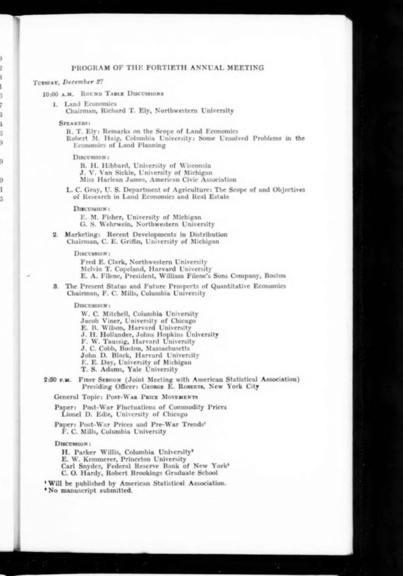

Thomas, 1928: a eficiência da indústria americana e seus custos
Leitura: 8 min
Thomas mede o salto da produção por trabalhador nos Estados Unidos desde 1899, concentrado na indústria depois de 1921, e lista as causas e os problemas que ele deixa.


Woodlief Thomas, da Divisão de Pesquisa e Estatística do Federal Reserve Board, abriu a sessão conjunta com a American Association for Labor Legislation sobre os aspectos econômicos e sociais do aumento da eficiência produtiva. O trabalho deveria ter sido lido por E. Dana Durand, do Department of Commerce, que estava fora do país; Thomas usou as estimativas dele. A pergunta era o que significava a prosperidade americana do pós-guerra, que chamava a atenção do mundo: produção em massa, integração em grandes empresas, mecanização, indústrias novas e bens que uma geração antes eram desconhecidos ou de luxo.
Quanto cresceu a produção por trabalhador?
Os números de Durand cobrem quatro ramos, agricultura, mineração, indústria de transformação e ferrovias, de 1899 a 1925. Os índices de quantidade foram compilados por Durand para minerais e transportes, pelo Department of Agriculture para a agricultura e, para a indústria, por Edmund E. Day e pelo próprio Thomas para o Bureau of the Census, ponderados pelo valor líquido da produção. Thomas não descontou a redução da jornada, porque faltavam dados e porque a produção por pessoa ocupada lhe parecia o fato economicamente mais significativo.
O avanço por trabalhador foi de 20% na primeira década, 15% na segunda e 29% nos últimos seis anos. Na mineração, o salto refletia sobretudo o petróleo, que exige pouca mão de obra e tem alto valor por pessoa. Na agricultura, Durand estimou que o número de pessoas ocupadas não mudara entre 1899 e 1925, e a produção, logo a produção por pessoa, crescera 47%, exatamente o mesmo número da indústria de transformação. Nas ferrovias, o tráfego por trabalhador subiu 56%, e outra estimativa indicava 100% por homem-hora.
Por que o salto veio depois de 1921?
Na indústria, a quantidade produzida cresceu 4% ao ano de 1899 a 1925. Mas a produção por pessoa subiu só cerca de 10% na primeira década, e os censos de 1914, 1919 e 1921 não eram representativos, por recessão ou por desajuste do pós-guerra. Os registros de 1923 e 1925 revelavam uma expansão fenomenal da produtividade industrial.
Depois de 1925, os índices mensais do Federal Reserve Board mostravam produção maior e emprego fabril em queda, o que indicaria mais 3% a 5% de ganho em dois anos. Entre as causas citadas por Durand, Douglas, Tugwell e outros, das restrições à imigração e da Lei Seca à administração científica, Thomas destaca as vantagens do país: recursos naturais, território, população e organização política. Os recursos fornecem matéria-prima, as próprias máquinas e o combustível; a população, a diversidade regional e a ausência de barreiras ao comércio interno formam um mercado sem igual. A escala do mercado, a abundância de capital e a educação do consumidor pela publicidade para aceitar artigos padronizados favorecem a produção em massa.
A mecanização acompanha o tamanho das fábricas. Em 1925, de 36 milhões de cavalos-vapor instalados nas fábricas, 26 milhões, ou 72%, chegavam às máquinas por motores elétricos, e a potência por pessoa empregada crescera 90% desde 1899. A administração científica, a educação mais ampla, a pesquisa organizada e o uso de estatísticas de negócios completavam o quadro.
Nada disso era novo, porém, e entre 1909 e 1921 a produtividade industrial não avançara. Para explicar o surto recente, Thomas aponta lições da guerra: novos processos, o valor da cooperação e da informação. Cita o poder quase autocrático dado pelas ferrovias à Car Service Division da American Railway Association para distribuir vagões. A capacidade instalada cresceu na guerra, e a depressão de 1921 forçou reorganizações, cortes de estoques, demissão de trabalhadores ineficientes e custos menores. A restrição à imigração e a Lei Seca podem ter contado, e fundos abundantes a juros razoáveis facilitaram trocar equipamento velho. Thomas destaca a ousadia do empresário americano em sucatear equipamentos e métodos e tentar novos.
Que papel tiveram as indústrias novas?
Para Thomas, uma das influências mais importantes foi a mudança de peso entre as indústrias. Crescem as que dependem da máquina ou poupam tempo e trabalho, e decaem as menos eficientes: o petróleo, o cimento no lugar do tijolo, da pedra e da madeira, o pão de padaria no lugar do caseiro, o automóvel. Com isso a produção total cresce mais que o número de trabalhadores.
Ele resume a análise da indústria feita por Day numa monografia do censo. Os maiores aumentos, de quatro ou cinco algarismos em porcentagem, estavam em bens de recreação e de novos hábitos, como automóveis, gasolina, pneus, fonógrafos, filmes, seda, sorvete, cigarros, raiom e rádio; depois vinham os bens de produção e os aparelhos que poupam trabalho no escritório e em casa. Os bens básicos cresciam pouco além da população: a necessidade de roupa das mulheres, medida em volume por pessoa, diminuíra, e a produção de farinha por habitante caíra. Ao mesmo tempo, produções passavam da casa para a fábrica.
“Leite fresco e verduras frescas são quase os únicos artigos básicos de alimentação que hoje chegam ao consumidor sem passar, em alguma medida, pela fábrica.” (Fresh milk and fresh vegetables are about the only staple articles of food which now, in general, reach the consumer without being fashioned in some measure in the factory.)
Quem ganhou com a eficiência?
A produção por habitante nos quatro ramos cresceu 55% no primeiro quarto do século, e a difusão de bens antes de luxo indicaria, para Thomas, que boa parte da população partilhara a melhora. A agricultura é a parte menos favorável: a produção agrícola por habitante não mudara, mas havia queixas de excedente crônico. Ele cita Carver, em discurso presidencial à American Farm Economic Association, segundo quem a demanda pelos grandes produtos agrícolas chegara ao limite, salvo o crescimento da população, porque a prosperidade levava as pessoas a gastar o excedente em luxos baratos. Os subprodutos e substitutos industriais, como o raiom e o óleo de caroço de algodão, renderiam mais aos processadores que aos agricultores.
Para Thomas, as empresas conseguiram aumentar a produção, baixar preços, manter salários e ampliar lucros. Entre as consequências favoráveis, lista mais lazer, mais tempo de estudo, menos trabalho pesado para a dona de casa e a proposta da semana de cinco dias. Entre os problemas, localidades arruinadas pela decadência de uma indústria, desperdício em publicidade competitiva de produtos quase idênticos, a opinião de que se gastava demais em automóveis, rádios, cinema, meias de seda, cosméticos, bebida de contrabando e jornais sensacionalistas, o excesso de trabalhadores no campo, a monotonia do trabalho mecanizado e o risco de desajustes entre o que se produz e o que se consome.
“No conjunto, lucramos com a crescente produtividade de nossa indústria, mas a prosperidade não deve nos impedir de reconhecer que cada passo na marcha do progresso nos põe diante de novos problemas.” (On the whole we have profited by the increasing productivity of our industry, but prosperity should not prevent us from recognizing that each step in the march of progress brings us face to face with new problems)
Na minha leitura
Na minha leitura, o trabalho é um retrato estatístico da chamada nova era dos anos 1920 feito de dentro do Federal Reserve, com os números do censo e do Department of Commerce. O ponto central é a concentração do ganho industrial depois de 1921 e a explicação pela mudança de composição da indústria, mais que por um único fator.
Na discussão, John D. Black mostrou que, comparada só com a indústria, a agricultura não ficava tão atrás, e Slichter lembrou que os números de Thomas registravam o salto recente que a equação de Cobb e Douglas não capturava.
Glossário
- Produção por trabalhador
- quantidade produzida dividida pelo número de pessoas ocupadas; Thomas não ajusta pela jornada.
- Índice de volume físico
- índice que mede a quantidade produzida, sem o efeito dos preços.
- Cavalo-vapor instalado
- potência dos motores primários das fábricas, usada como medida de mecanização.
- Administração científica
- conjunto de métodos de organização do trabalho e da produção associado a Frederick Taylor.
Fontes
- The Economic Significance of the Increased Efficiency of American Industry — Woodlief Thomas (Division of Research and Statistics, Federal Reserve Board) (pp. 122–138). Internet Archive (número completo, PDF)
- Edição completa, com os demais artigos: Nº 207 do Arquivo.
Documento em domínio público (EUA, publicado antes de 1931), via JSTOR Early Journal Content e Internet Archive. Resumo e comentário do autor deste site, sem afiliação com a American Economic Association. Encontrou um erro? Escreva: a correção é publicada no próprio texto, com data.
← Blakey, 1928: ganhos de capital, sociedades anônimas e o limite da simplificação ↑ Nº 207 · Washington, 1927: ouro, produtividade, ferrovias e dívidas de guerra Cobb e Douglas, 1928: uma teoria da produção →